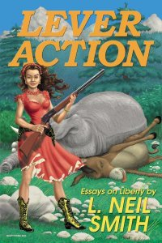
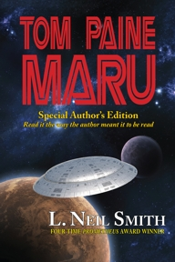
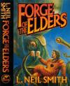
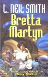

|
|
![[BOR Enforcement!]](tools/littlelogo.gif)
If you like L. Neil Smith's books, look at all this other cool individual liberty stuff you can get here for free!
Webley Page
The Webley Page
DAY
FORGE OF THE ELDERS: OKAY, HERE'S THE DEAL March 16, 2007
Only 1,500 copies left!
Buy direct from the publisher
The Webley Mk VI Revolver
L. Neil Smith
Drawn by
Scott BieserWhy Did it Have to be ... Guns?
by L. Neil Smith
lneil@lneilsmith.orgOver the past 30 years, I've been paid to write almost two million words, every one of which, sooner or later, came back to the issue of guns and gun-ownership. Naturally, I've thought about the issue a lot, and it has always determined the way I vote.
People accuse me of being a single-issue writer, a single- issue thinker, and a single- issue voter, but it isn't true. What I've chosen, in a world where there's never enough time and energy, is to focus on the one political issue which most clearly and unmistakably demonstrates what any politician—or political philosophy—is made of, right down to the creamy liquid center.
Make no mistake: all politicians—even those ostensibly on the side of guns and gun ownership—hate the issue and anyone, like me, who insists on bringing it up. They hate it because it's an X-ray machine. It's a Vulcan mind-meld. It's the ultimate test to which any politician—or political philosophy—can be put.
If a politician isn't perfectly comfortable with the idea of his average constituent, any man, woman, or responsible child, walking into a hardware store and paying cash—for any rifle, shotgun, handgun, machinegun, anything—without producing ID or signing one scrap of paper, he isn't your friend no matter what he tells you.
If he isn't genuinely enthusiastic about his average constituent stuffing that weapon into a purse or pocket or tucking it under a coat and walking home without asking anybody's permission, he's a four-flusher, no matter what he claims.
What his attitude—toward your ownership and use of weapons—conveys is his real attitude about you. And if he doesn't trust you, then why in the name of John Moses Browning should you trust him?
If he doesn't want you to have the means of defending your life, do you want him in a position to control it?
If he makes excuses about obeying a law he's sworn to uphold and defend—the highest law of the land, the Bill of Rights—do you want to entrust him with anything?
If he ignores you, sneers at you, complains about you, or defames you, if he calls you names only he thinks are evil—like "Constitutionalist"—when you insist that he account for himself, hasn't he betrayed his oath, isn't he unfit to hold office, and doesn't he really belong in jail?
Sure, these are all leading questions. They're the questions that led me to the issue of guns and gun ownership as the clearest and most unmistakable demonstration of what any given politician—or political philosophy—is really made of.
He may lecture you about the dangerous weirdos out there who shouldn't have a gun—but what does that have to do with you? Why in the name of John Moses Browning should you be made to suffer for the misdeeds of others? Didn't you lay aside the infantile notion of group punishment when you left public school—or the military? Isn't it an essentially European notion, anyway—Prussian, maybe—and certainly not what America was supposed to be all about?
And if there are dangerous weirdos out there, does it make sense to deprive you of the means of protecting yourself from them? Forget about those other people, those dangerous weirdos, this is about you, and it has been, all along.
Try it yourself: if a politician won't trust you, why should you trust him? If he's a man—and you're not—what does his lack of trust tell you about his real attitude toward women? If "he" happens to be a woman, what makes her so perverse that she's eager to render her fellow women helpless on the mean and seedy streets her policies helped create? Should you believe her when she says she wants to help you by imposing some infantile group health care program on you at the point of the kind of gun she doesn't want you to have?
On the other hand—or the other party—should you believe anything politicians say who claim they stand for freedom, but drag their feet and make excuses about repealing limits on your right to own and carry weapons? What does this tell you about their real motives for ignoring voters and ramming through one infantile group trade agreement after another with other countries?
Makes voting simpler, doesn't it? You don't have to study every issue—health care, international trade—all you have to do is use this X-ray machine, this Vulcan mind-meld, to get beyond their empty words and find out how politicians really feel. About you. And that, of course, is why they hate it.
And that's why I'm accused of being a single-issue writer, thinker, and voter.
But it isn't true, is it?
Permission to redistribute this article is herewith granted by the author—provided that it is reproduced unedited, in its entirety, and appropriate credit given.This essay and many others are also in my book Lever Action:

Lever Action
by L. Neil Smith
Trade paperback, published by Mountain Media, 2001
Winner of Free-Market.net's Freedom Book of the Month Award for May 2001.
More information
ORDER FROM AMAZON.COM

L. Neil SmithWelcome to L. Neil Smith's Home on the World Wide Web!
What I want to accomplish artistically amounts to nothing more than fulfilling the promise of the American Revolution. -- L. Neil SmithThe L. Neil Smith at Random 'Blog
Free On-line version of The Probability Broach: The Graphic Novel Updated every Wednesday until completed
Free On-line version of Roswell, Texas Updated every Friday until completed
A Day at the Range (new irregular illustrated 'blog) Updated October 19
MY BOOKS

Tom Paine Maru
by L. Neil Smith
Originally published by Del Rey Books, 1984 (now out of print).
First uncensored edition republished as a downloadable .pdf eBook by L. Neil Smith in 2005 (now out of print).NOTE: Back in Print! from Arc Manor Publishers under their Phoenix Pick imprint.
ORDER FROM AMAZON.COMThe Probability Broach: The Graphic Novel
by L. Neil Smith and Scott Bieser
Published by Bighead Press, November 2004.
Paperback, 185-pages, large-format.
More information
ORDER FROM LAISSEZ-FAIRE BOOKS
ORDER FROM AMAZON.COM
Click here for a sampleThe American Zone
by L. Neil Smith
Hardcover, published by Tor Books, November, 2001
Proclaimed the "Freedom Book of the Month" for December, 2001, by Free-Market.net
More information
ORDER FROM AMAZON.COMThe Probability Broach
by L. Neil Smith
Trade paperback, published by Tor Books, December, 2001 (First published by Random House, 1980, reprinted by Tor Books, 1996).
Winner of the Prometheus Award from the Libertarian Futurist Society (best Libertarian Science Fiction Novel of the Year) for 1980/81; widely considered the definitive libertarian novel.
More information
ORDER FROM AMAZON.COMHope
By Aaron Zelman and L. Neil Smith
Mass-market paperback, published by Mazel Freedom Press, 2001
Winner of Free-Market.net's Freedom Book of the Month Award for August, 2001.
Hope was designated the "Freedom Book of the Year for 2001" by Free-Market.net.
ORDER FROM THE DISTRIBUTOR (And more information!)The Mitzvah
By Aaron Zelman and L. Neil Smith
Mass-market paperback, published by Mazel Freedom Press, 2001
Winner of Free-Market.net's Freedom Book of the Month Award for July, 1999.
ORDER FROM THE DISTRIBUTOR (And more information!)
Forge of The Elders
(Contact and Commune, Converse and Conflict, Concert and Cosmos in one volume as originally intended)
Hardback, published by Baen Books, April, 2000
Winner of the Prometheus Award from the Libertarian Futurist Society (best Libertarian Science Fiction Novel of the Year) for 2000
Hardback & Paperback: More information and:
FORGE OF THE ELDERS: OKAY, HERE'S THE DEAL March 16, 2007
Only 1,500 copies left!
Buy direct from the publisher
Hardback: ORDER FROM AMAZON.COM
Paperback: ORDER FROM AMAZON.COM
Bretta Martyn
by L. Neil Smith
Mass-market paperback edition, published by Tor Books, October 1998
Hardback: More information
Paperback: More information
Hardback: ORDER FROM AMAZON.COM
Paperback: ORDER FROM AMAZON.COM
The Atlanta Declaration, a Flash Animation (file size 55,641-bytes) by Lux Lucre, September, 2001
For more of his work, see http://www.luxlucre.com/flash/About which Neil remarked:
Let the hysterics foam and froth. It keeps them from doing more disgusting things. That individuals have rights, not privileges isn't just an idea, it's a fact of objective reality. Let the hysterics be afraid. It's time for them to be afraid.
To withhold the truth because you're worried about the reaction of the weakest, stupidest, or most ignorant or corrupt among us -- especially when that truth is exactly what we need to set us free - would be an act of cowardice or insanity. It would mean that we deserve to be where we are now instead of where we aspire to be.
It would be the act of a slave.
PUBLIC NOTICE: henceforward, I shall be calling the cartridge formerly known as ".40 S&W" by a new name -- ".40 Liberty" -- to disassociate one of the greatest implements of self-defense ever conceived from the cowardly corporation doing its best to eradicate the very concept of self-defense, and to remind everybody to boycott that corporation and interdict its sales to all government agencies.
-- L. Neil Smith